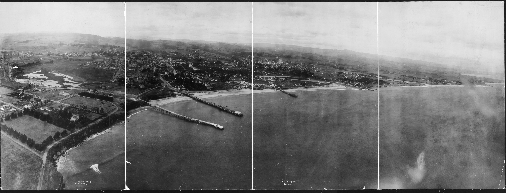

Santa Cruz from the kite camera, 1906 and now
Left of the line is the George R. Lawrence Co. panorama of 1906; right of it is today's city seen from the same point, about 614 feet above the water just off West Cliff. Drag the round handle to move the line. Scroll or double-click to zoom in where the pointer is; drag the picture to move around.


Left: George R. Lawrence Co., 1906, Library of Congress LC-USZ62-53410. Right: Google Earth, imagery date 5/14/2024 (Google); screen captures of the 3D model reprojected onto the 1906 print. The right side is a rendered model, not a photograph.
Buildings and trees in the model are approximate up close, and the beach, wharf and river mouth are where they are today. Place buttons point at where each place sits in the 1906 picture.
More about the 1906 photograph
A place-by-place guide to the houses, wharves and hills in the picture, with text by Peter Nurkse, is on the Virtual Santa Cruz Exhibit: Santa Cruz in 1906. That site is independent. This page is not affiliated with it and has not checked its details.
The original is held by the Library of Congress: LC-USZ62-53410.